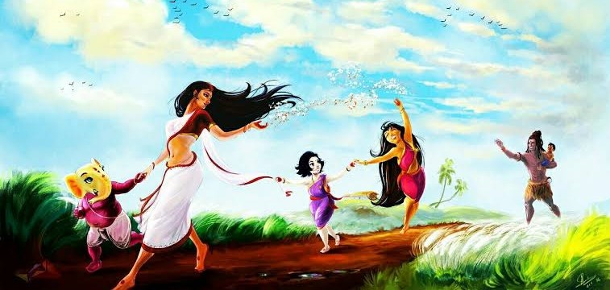

উৎসবের পটভূমি :
এই দুর্গোৎসবের পটভূমি অপূর্ব সুন্দর। ঘননীলমেঘশ্যামা বর্ষা বিদায় নেওয়ার পর বৃষ্টি ধোয়া নীলাকাশ সোনালি রোদ্দুরের আলপনায় সেজে উঠতে থাকে। শিশির ভেজা দূর্বা ঘাসে ঝরে পড়া মুঠো মুঠো শিউলি ফুলের মাতাল করা গন্ধে মেতে ওঠে মন প্রাণ। শরতের তুলোর মতো সাদা কাশফুলে ভরে হয়ে ওঠে বাংলার মাঠ-ঘাট, নদী প্রান্তর।

দুর্গা মায়ের আগমনের বাণী ঘোষণা করেই যেনো প্রকৃতি সেজে ওঠে এক অভিনব সজ্জায়। কোন এক প্রাচীন যুগে হয়ত এমনই মনোরম পরিবেশে সকল বিপত্তির অবসানের উদ্দেশ্যে শরৎকালে দেবী দুর্গার অকালবোধনের আয়োজন করেছিলেন শ্রী রামচন্দ্র। বাঙালি প্রতি শরৎ ঋতুতে মা দুর্গার বোধন করে সেই ঐতিহ্যকে আজও বহন করে নিয়ে চলেছে।